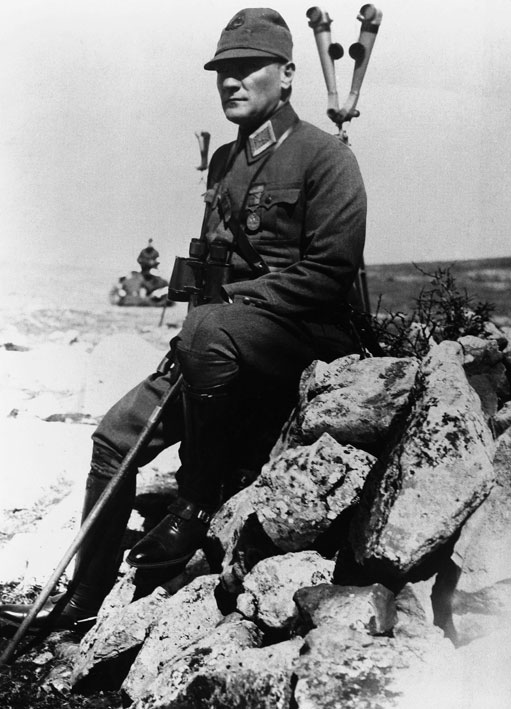

🏛️ Tarihî Günler ve Haftalar Tablosu
İncelemek ve sınıfta anlatmak istediğiniz günün kartına tıklayın.
⏳ Kurtuluş Savaşı ve Cumhuriyet Kronolojisi (1915 - 1923)
Çanakkale Zaferi'nden Cumhuriyetin İlanına uzanan sebep-sonuç zinciri.
1. BÖLÜM
30 AĞUSTOS 1922
Millî Mücadele Dönemi

🔍
Büyük Ekranda İncele (Zoom)
🏛️ Orijinal Tarihî Belge / Fotoğraf
ℹ️
Etem Temel'in ünlü Kocatepe fotoğrafı. Mustafa Kemal Paşa Büyük Taarruz öncesinde, 26 Ağustos 1922.
Kaynak: Türk Tarih Kurumu & Millî Savunma Arşivi
İlgili Orijinal Arşiv Görselleri: